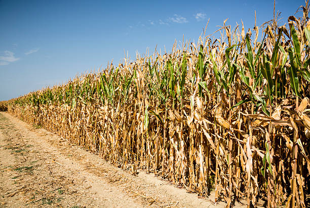
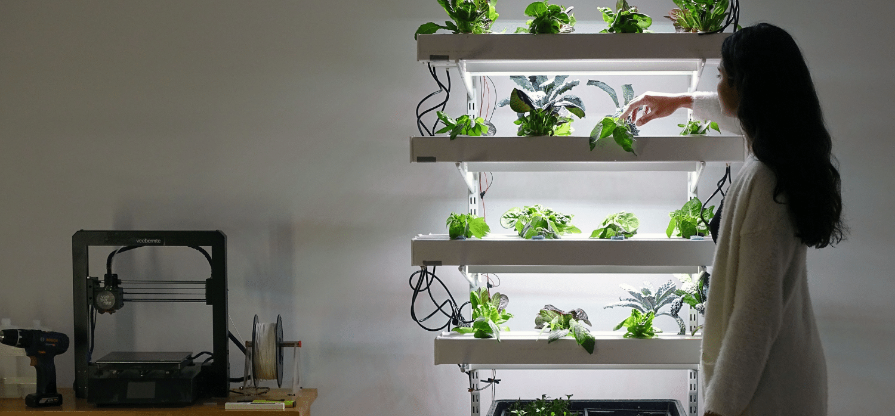

April - June 2023
My Journey to Grow Bell Peppers
My purpose on "My Journey to Grow Bell Peppers" was to add new skills to my current skills and find ways to use skills from other areas in my future career. One problem we are having is sanctioning Russia while they are at war with Ukraine is causing specific products to increase in price. Some examples are fuel and fertilizer. Fuel is a modern necessity to run the world, without it, we would be able to even maintain the simplest of modern farms. Fertilizer is used to improve the production of farming and without it, the farm will produce less yield which leads to having to feed less animals which leads to less supply. I'm tackling the production side of the food system because with so many threats in the world to our food production, knowing how to create a simple system to feed yourself and others to survive is a skill that could determine if you live or die.


Factors that should be considered in developing a recommendation is how much money would it take to reach your goal. I think we should be more self-sufficient because, in the face of global catastrophes or war, we wouldn't be as hindered as before. The problem with this is production in the United States is significantly more expensive compared to countries in Asia. I believe a step towards self-sufficiency is building hydroponic systems that anyone can replicate at home! Some potential problems with my hydroponic system I could possibly run into is not being able to control the temperature inside the grow tent.
Some recommendations are opening the vent holes in the grow tent to promote better air circulation or closing them. I also have a fan which you could use and change the speed if needed. When building my hydroponic system I realized that the light I am using does not have an off button or any way to control it. This could lead to overheating in the tent because I cannot control the light. My recommendation is depending on the plant requirements to have a fan under the light towards a ventilation hole in the grow tent to push the heat away. A fan and open vents will push out hot air from inside the grow tent, keeping the air fresh and cool. Adding on to my possible problem it doesn't help that my grow tent is next to a radiator this currently doesn't cause a problem because it is off during the summer but in the winter it could affect the temperature inside the tent. The concept I have learned is the importance of biomimicry. I can apply this to my case because we want to mimic the environment of the plant I am growing as much as possible so having a temperature that is not within range of the ideal temperature of my plant will cause my plant to die or never grow.